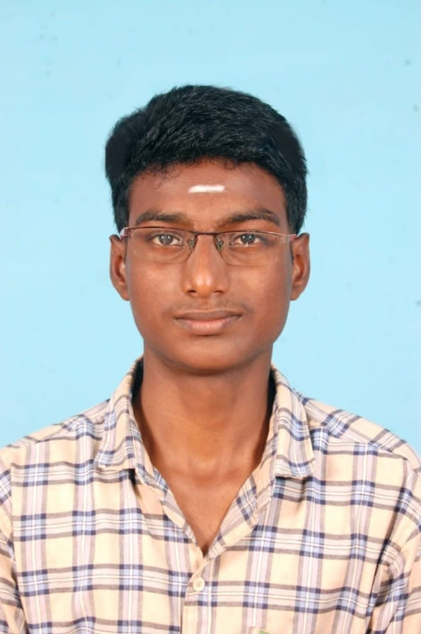

I am a passionate second-year Electronics and Communication Engineering student at Sri Krishna College of Technology. With a strong foundation in full-stack web development and a deep interest in programming, I am always looking for new opportunities to learn and apply my skills in real-world projects. I am also a public speaker with a keen interest in leadership ideologies and philosophy.
I aim to leverage my technical skills and passion for innovation to contribute to impactful projects and solve real-world challenges.
